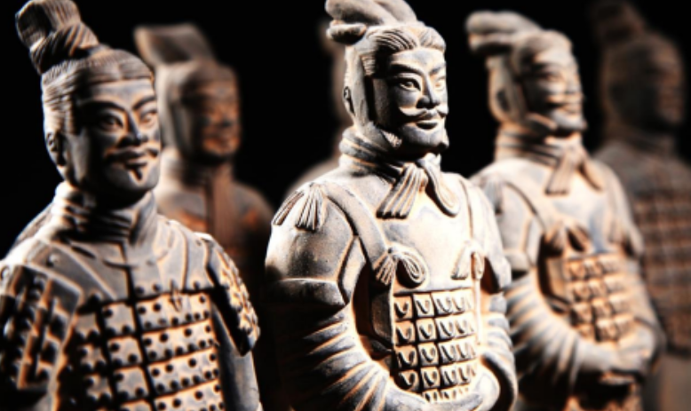
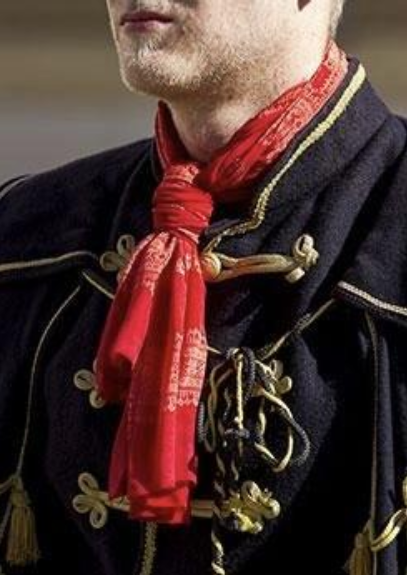
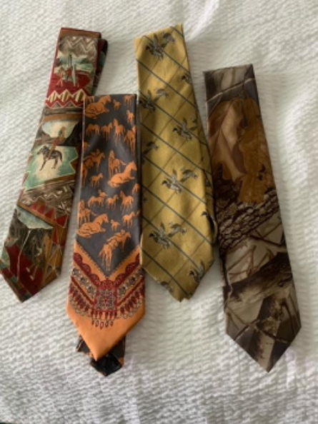
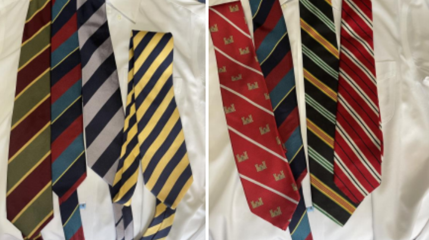
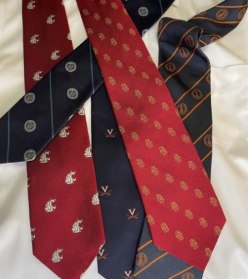
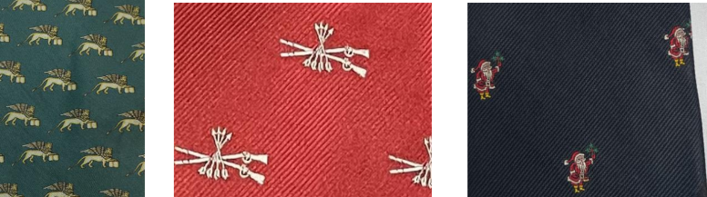
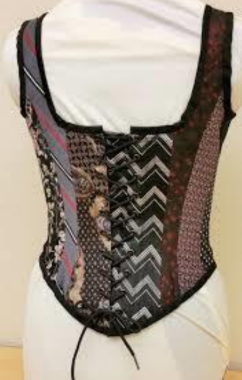
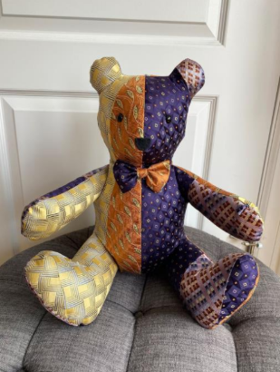
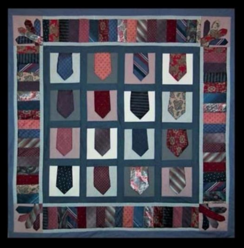

By Elizabeth Dunlop Richter
The opera, church, the office, a restaurant dinner, a cocktail party, a business meeting, and the list goes on. Once there were dozens of places a man would don a necktie without a second thought. When was the last time you or the man in your life wore one? A funeral perhaps? Most men over 40 have a full wardrobe of neckties for every occasion to go with a variety of suits, tailored jackets, shirts, and formal wear. Yet few have worn one this week unless their occupation requires it. What happened?

Some sort of neck covering has characterized men’s wear for centuries. It’s hard to believe that even a caveman didn’t at some point take a sabertooth tiger tail and wrap it around his neck, admiring the look in a still pool of water. We’ll never know (unless a new cave painting is discovered). We do know that the famed Chinese terracotta soldiers wore scarves of different colors to distinguish rank. Roman reliefs show soldiers with neck scarves, presumably to protect their necks from chafing from armor.

Chinese terracotta soldiers wore distinctive neck scarves
The western decorative use of neck ornament appears to have originated with the French in the 17th century. Reportedly King Louis XIII was attracted to the neck scarves worn by Croatian mercenaries; the French word for Croatian translated to cravat. French soldiers adapted the style and soon, thanks to the king, the cravat trend spread to the French nobility.
Today, Croatia celebrates Cravat Day on October 18, as “a universal symbol of elegance and…human dignity.”

Croatian uniform features the red cravat
Over the next several hundred years, neck adornment took many new forms, including the simple scarf, the more complicated stock, the bandana, the string tie, the more familiar bow tie, and in the 19th century eventually the long tie we know today. In recent years, however, the actual wearing of a tie of whatever type has begun to disappear…for some.
“I LOVE black or white tie, I LOVE taking pride and being dressed up, especially for a fun party…and I detest the word “Casual”.” (real estate broker Brian White)
“The last time I wore a tie on a daily basis was 14 years ago.” (ranch owner Greg McCandless)
The range of tie-wearing behavior varies widely. One’s occupation, nationality, and age all affect who wears ties and when. Regardless, however, the trend of abandoning ties in America is on the upswing. At the Cincinnati Symphony, the no-tie to tie ration is 3-2 in a group of young audience members. Canlis, perhaps Seattle’s most elegant restaurant, has changed its policy.” We do not require ties but did at one point. I would say nowadays it is more common for gentleman (especially younger gentlemen) to wear a sport coat and no tie.”
Cincinnati Symphony audience
Canlis, Seattle
The private Casino Club in Chicago has a variation on that policy. Coat and tie are required in all dining rooms on the main floor. There is a newer lower floor bar with a more relaxed dress code: no ties required, reports Executive Director Sarah Potter.
The no-tie custom dates to Hawaii in 1966 when firms began to honor “Aloha Friday” by allowing employees to dress casually on Fridays and in a few years gave weeklong permission. Casual Fridays spread to California. By the mid 1990’s hundreds of American companies, including major players like Ford and IBM, allowed employees to leave their ties at home on “Casual Friday.”
Men’s wear providers began to focus on a new dress code that consisted of khakis and polo shirts sometimes with jackets but no ties. All companies, however, did not go along. Trevor McCandless, in his first job in the world of accountants pushed back in vain. “My first job (2005 to 2009) required us to wear ties daily. I would argue with my boss that we were contributing to global warming because it forced us to turn the AC in the office down lower. Unfortunately, that argument didn’t go anywhere, lol. After I started my own firm (2011), the tie usage plummeted.” He owns just five ties, including two bow ties.
Preferences within a family are not necessarily the same. Trevor’s older brother Dylan maintains a fondness for ties. A Caterpillar dealer vice president, he recalls, “I used to wear them a lot more and actually wish I could wear them more. Years ago, it was a lot more common to dress up and wear suits and ties at business meetings…. The necktie and blazer have been replaced by just a blazer or suit jacket.” In keeping with their preferences, Trevor appears online with no tie, but Dylan’s tie is neatly in place. He owns nine ties.
Dylan McCandless
Dylan and Trevor’s father Greg McCandless is a good representative of the older generation. “I have 14 ties; I may have had a couple more ties years ago…The last time I wore a tie on a daily basis was 14 years ago [when I was] working as a public high school administrator.” Greg’s passions are now horses and hunting; his current tie collection reflects that.

Greg McCandless’ sporting ties
All three men wear ties to weddings; funerals and private clubs rank a close second.
Men tend to keep their ties even if they don’t wear them. Author and theater expert Mark Larson wore ties when he was with the Lincoln Park Zoo, and they were mandatory for management. “I have a box, yes, a box of ties unused and tangled like random power cords. I think there must be 30 or 40 ties in there. I don’t wear them anymore. It’s been decades. When I went to university to teach [National Louis University], you could wear whatever you wanted. So my ties ended up in that box. I have no idea why I keep them.”
Mark Larson
Unless, of course, you are Brian White. He is a serious custodian of his ties. “I must own 150 or so neckties, some dating back to my first Gucci ties I bought back in the 1980’s (too good to throw away!) This includes both regular ties and bow ties which I wear equally. My favorites are always Turnbull & Asser, along with Ralph Lauren, Brooks Brothers, Vineyard Vines, and Ben Silver. I joke that I sleep in a Coat & Tie – but I tend to wear ties out for almost every “social” situation. From every club in town (even when told all that is needed is a jacket), to hosting dinner parties or cocktail parties at home, to all air travel (we get compliments literally every time we fly) to building board meetings….to yes, even showing properties in the Gold Coast & East Lake Shore Drive! Basically, anything and everything… except when sailing, at the gym or grocery shopping!”
Brian White
Although he doesn’t collect ties as avidly as White, new father Joey Vishny is somewhat of a kindred spirit. “I typically like to make sure that I’m overdressed rather than underdressed if ever going to a formal event – so I’ll always wear a tie there. I’d say mostly it’s weddings, events for families like a baby naming or religious event, funerals, important holidays.” Vishny works remotely from home and can wear baby-friendly casual clothes whenever he likes.
COVID was the next major development in tie-wearing activity. As working from home behind a computer screen became common, it made less sense to put on a formal shirt and tie. Of course, many office workers were known to “dress up” from the waist only, sporting PJs on the bottom. With the return to the office after the pandemic, employees were in many cases reluctant to once again pull out a tie.
Ties that survive the “I don’t wear ties anymore” corner of the closet have special meaning for their owners. These are often the ties that the “I don’t wear ties anymore” gentlemen keep for those few tie-required occasions. In England, “the old school tie” is a link a graduate may wear reflecting the design of the tie worn as part of one’s school uniform. The English also created the striped tie design reflecting one’s military regiment. Striped ties are now generically known as regimental ties. Check the direction of the stripes to know if it’s an American design traditionally with stripes from right to left or of English origin customarily left to right (“heart to sword”).

School ties are of course popular in America. College merchandise proliferates, whether it’s a sweatshirt or a blazer or a stuffed mascot. A tie, whether worn today or not, is the most likely to lurk in a closet. Family alums may see their colleges also represented in the collection.

Other favorites that may demand space in the closet are beloved destinations, clubs and of course holidays.

Leone San Marco (Venice) Society of Colonial Wars Illinois Santa ClausIt’s clear that despite the decline in wearing ties, there are holdouts, and there are an infinite variety of designs and styles from which to choose. We haven’t even gotten into bow ties, white tie, bolo ties, ascots and what the English call day cravats. But for those who have truly abandoned their tie collections, there remains a challenge. What to do with the ties? If it would be too painful to give them away (to whom?) or heaven forbid, throw them away (the silk ties were expensive!), there is a whole new world to explore. The online website Etsy is one of the best sources of ideas for ways to recycle ties or new tie creations to purchase. If you can imagine it, you’ll find it.
 |
 |
